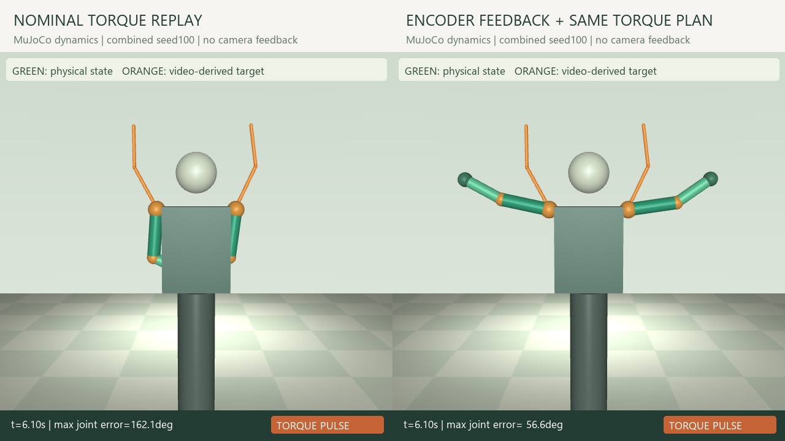

Add a stronger comparator
After the large open-loop gap, a same-gain PD-only comparator isolated feedforward contribution. The post-hoc design and fresh seeds are recorded.
Physical AI · Perception and simulated control
Video-derived targets drive four arm joints in MuJoCo with joint feedback. The case isolates controller contributions across 400 physical simulations and reports both total abstention and post-hoc false rejections on real footage.

20 fresh seeds · add feedforward at the same PD gains
Original 160 + additional 240 · 60 development runs separate · one reference motion
Original eight all unknown · later repair rejected all three positives
01 / PROBLEM
V1 missed reordering, omissions, and freezes in real dance despite low alignment costs. V2 separates required stage order, dwell, and observability, then adds a separate control experiment that executes video-derived targets in a physical model.
The two outcomes remain separate. All real-footage stage decisions were deferred, while simulation measured contributions from joint feedback and planned feedforward torque. Human choreography compliance and a robot model tracking its target require different evidence.
02 / PERCEPTION
An upstream YOLO11s Pose model extracts joints and confidence. Coordinates are normalized by torso scale and body center, and each required reference stage needs valid observations and dwell. A frame cannot complete several stages at once, and occluded intervals do not supply positive evidence.
All 21 V1 comparisons are declared observed development data. Rules and thresholds were frozen before separately fixing the new real footage, intervals, and AI-assisted visual labels and running inference. Unknown is counted separately from success and failure.
Freeze sources and visual labels
Joint confidence and valid observations
Evidence for every required stage
pass / fail / unknown
03 / REAL-FOOTAGE EVALUATION
The new material contains three visible performances from two recordings. Four contiguous-segment comparisons and four edited controls make eight cases. The contract covers raising and lowering both arms twice; these are not eight new people or eight independent recording sessions.
Pre-inference draft labels contain three positives and five negatives. The frozen verifier returned unknown for all eight, with reference_contract_not_observable. Reference visibility and some short core intervals did not satisfy the evidence requirements, preventing decisions even when a candidate was observable.
Decision coverage is 0/8, with three positive and five negative unknowns. Zero false positives and false negatives do not indicate correctness: this run detected neither compliant performances nor violations. Any revision after observing these results is a post-hoc development analysis on the same data and cannot replace this evaluation.
| Pre-inference draft label | pass | fail | unknown |
|---|---|---|---|
| Compliant · 3 | 0 | 0 | 3 |
| Noncompliant · 5 | 0 | 0 | 5 |
04 / POST-HOC FAILURE
After observing the unobservable-reference result, a separate rule defined low and high arm states from hand height and was applied to the same eight cases. This is a post-hoc analysis of already observed material and does not replace the original frozen evaluation.
Although seven of eight cases received decisions, all three draft positives were incorrectly rejected. Counts are TP 0, FN 3, TN 4, and FP 0, with one negative unknown. Higher decision coverage cannot be described as improved accuracy. The experiment did not achieve deployment quality for automatically accepting or rejecting real human performances.
| Draft label on the same data | pass | fail | unknown |
|---|---|---|---|
| Compliant · 3 | 0 | 3 | 0 |
| Noncompliant · 5 | 0 | 4 | 1 |
05 / PHYSICS IMPLEMENTATION
Shoulder and elbow coordinates from the generated reference become image-plane angles for four hinge joints on a fixed torso. Smoothed target positions, velocities, and accelerations produce nominal inverse-dynamics torque in advance. This is not a reconstruction of full 3D human motion, depth, or axial rotation.
MuJoCo 3.13.0 advances arms with gravity, inertia, and damping under motor torque. Actual q and q̇ evolve through physics steps rather than being overwritten by the target. FF+PD adds encoder error correction to planned torque, under the same torque budgets used by the comparison policies.
Online feedback comes from ideal simulated joint encoders. Video pose is used only to produce offline targets; there is no camera observing the robot in a visual feedback loop and no physical hardware execution.
2D shoulder and elbow angles
Nominal inverse dynamics
4 hinges · motor torque
PD feedback at fixed gains
06 / PAIRED CONTROLLER ABLATION
After finding that the initial open-loop comparator was weak, a separate post-hoc experiment added PD-only. Its specification was frozen before observing fresh seeds 200–219, producing 240 evaluations across four conditions, 20 seeds, and three policies. The original 160 results remain intact; 60 development runs are excluded from the evaluation count.
PD-only and FF+PD share Kp and Kd, initial state, perturbations, motor limits, and a 14-second budget. They differ only in adding the precomputed torque. This isolates the feedforward contribution at fixed feedback gains rather than comparing independently optimized controllers.
Combined-condition mean RMSE decreased from 11.656° to 10.024°. The paired reduction is 1.632°, with an internal simulator-seed bootstrap 95% interval of 1.299–1.964°. Completion changed by one episode, from 13/20 to 14/20; its rate-difference interval is 0–0.15, so the experiment does not establish a clear improvement in completion success.
| Fresh-seed condition | PD-only RMSE | FF+PD RMSE | Window completion PD / FF+PD |
|---|---|---|---|
| Nominal model + initial jitter | 3.11° | 0.66° | 20/20 · 20/20 |
| Torque disturbance | 3.13° | 0.76° | 20/20 · 20/20 |
| Reduced motor gain | 4.75° | 2.31° | 20/20 · 20/20 |
| Gain, mass, damping change + disturbance | 11.66° | 10.02° | 13/20 · 14/20 |
07 / FAILURE ANALYSIS
On original seeds 100–119, FF+PD completed only 8/20 combined-condition episodes with 13.93° mean RMSE. The new 14/20 result comes from different samples; it does not mean a controller change improved eight successes to fourteen. Six of twenty fresh episodes still failed the criterion.
Completion requires all four joint errors to stay within 12° for 0.35 seconds inside each of five fixed windows. It does not certify errors outside those windows or semantic and artistic dance quality. Recovery time marks the start of an in-tolerance interval; roughly 1 ms for an already-in-range case is not ultrafast recovery performance.
An independent check found an inverse-to-forward acceleration residual of 2.84e−14. Yet an exact-initial-state diagnostic with torque limits widened to ±30 Nm still produced 32.10° open-loop RMSE. Some original target torques also exceed the 12 Nm shoulder limits, so the large nominal baseline gap cannot be attributed solely to 0.25° initial jitter.
08 / RESEARCH AND SCOPE
Following the 16-paper V1 review, V2 focuses on seven primary sources: TCC and LAV for temporal alignment, FineDiving and CaptainCook4D for stages and errors, DeepMimic and AMP for physical motion imitation, and official MuJoCo documentation.
The implementation uses YOLO pose inference, a custom stage verifier, nominal inverse dynamics, and PD control. It does not reproduce learned TCC/LAV representations or DeepMimic/AMP reinforcement-learning policies, and trains no new motion policy.
The Physical AI connection spans video observation, target conversion, physical action, and joint feedback. It covers only four arm joints with a fixed torso and disabled collision contacts, providing no evidence for whole-body balance, locomotion, contact manipulation, real robots, or sim-to-real performance.
09 / RECORDED EVIDENCE
The public V2 page explores real footage, saved pose and stage decisions, and recorded MuJoCo trajectories. It does not run live GPU pose inference or physical control on Vercel. The simulation video renders recorded qpos, while the evaluated states were generated by physical integration.
Reference footage, code and configuration hashes, seeds, perturbations, failures, and abstentions accompany the results. Development data, frozen new evaluations, and analyses added after seeing results remain distinct.
ENGINEERING DECISIONS
After the large open-loop gap, a same-gain PD-only comparator isolated feedforward contribution. The post-hoc design and fresh seeds are recorded.
The eight frozen unknowns and three false rejections after repair remain visible together. Revisions tested on the same data are not relabeled independent validation.
Commands, actual joints, reference trajectories, and disturbances are stored separately. Evaluated motion was not generated by assigning target poses directly.
SCOPE & LIMITS
South Korea · Korean / English